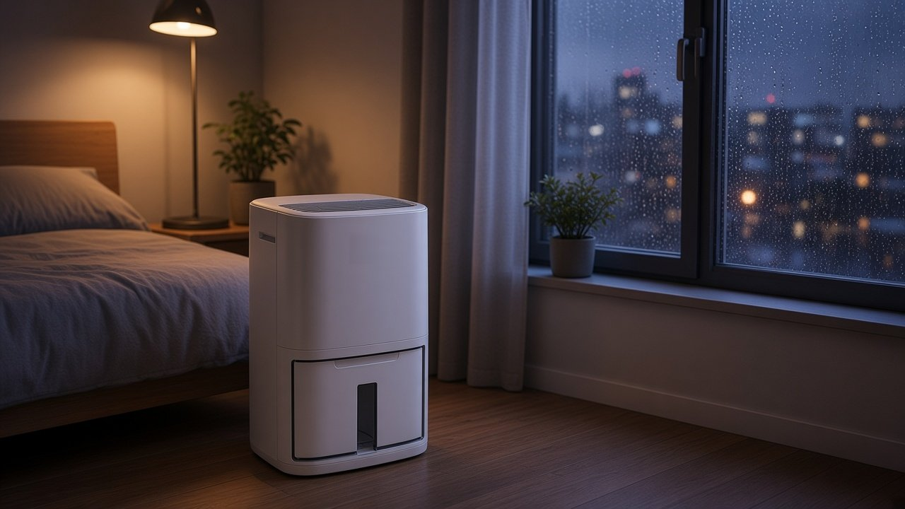
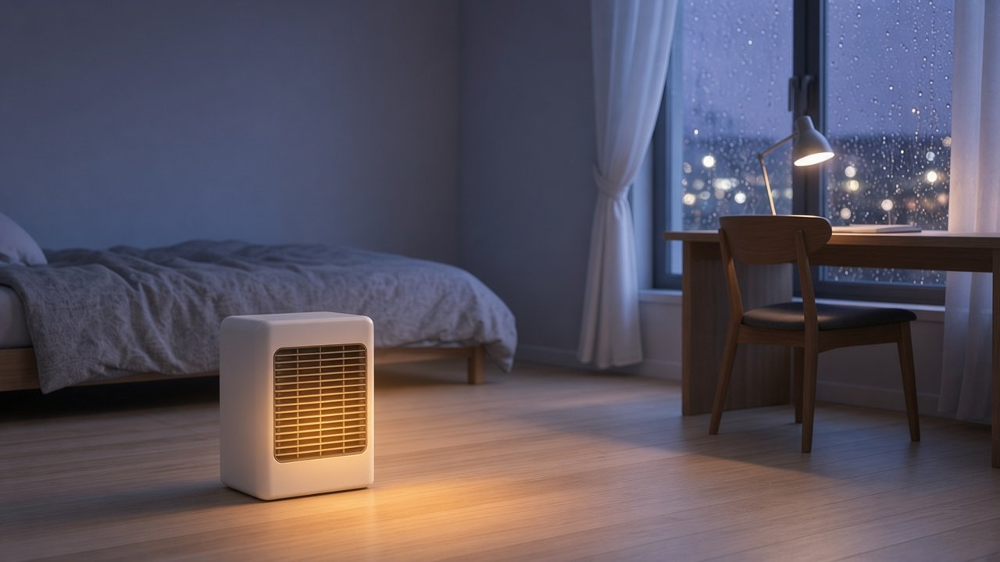

家電・冷暖、空氣與廚房小家電

精選比較
家電

家電・租屋 · · 比較 5 款
套房微波爐怎麼挑？20L 5 款比較，先算分路與擺放空間（2026）
套房微波爐先算分路電流與留空，再對照 5 款官網規格：功率、爐腔、擺放要求。
NT$2,790–3,690
比較 5 款1,100–1,280W20L
閱讀比較 →
家電

家電・租屋 · · 比較 4 款
套房電鍋怎麼挑？3–6 人份 4 款比較，先算分路瓦數（2026）
套房電鍋先算分路瓦數，再對照 4 款官網規格：功率、內鍋、重量與保固。
NT$990–1,480
比較 4 款350W–500W3–6 人份
閱讀比較 →
家電

家電・租屋 · · 比較 5 款
套房除濕機怎麼挑？6–9 公升 5 款比較：EF 值、電費、水箱（2026）
套房除濕機先看坪數、EF 值與水箱，再對照 5 款官網規格與電費算法。
NT$4,790–6,990
比較 5 款6–9 公升/日全部能效 1 級
閱讀比較 →
家電

家電・租屋 · · 比較 5 款
小坪數租屋電暖器怎麼挑？怕跳電先看功率：5 款 2026 冬季比較
小坪數怕跳電，先看瓦數和迴路，再對照 5 款電暖器的品牌官網規格。
NT$1,690–2,299 （另有 3 款跨價位參照）
比較 5 款4 陶瓷＋1 對流550W–1,350W
閱讀比較 →